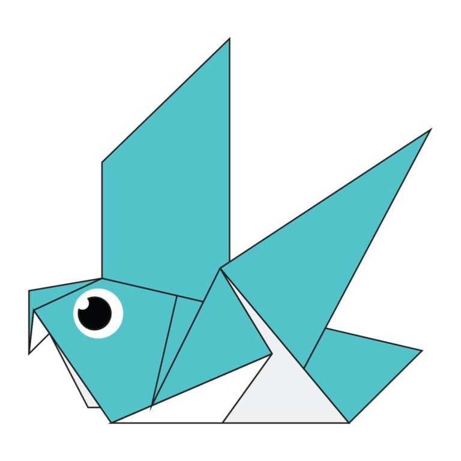

Origami Designs
About Us
Follow Us
My Image
Camels
Interesting Facts about Camels.
There are two types of camels: One humped or “dromedary” camels and two humped Bactrian camels.
Camels have thick lips which let them forage for thorny plants other animals can't eat.
Camels have three sets of eyelids and two rows of eyelashes to keep sand out of their eyes.
here
Chameleon
Interesting Facts about Chameleon.
Chameleon are reptiles that are part of the iguana suborder.
Changing skin color is an important part of communication among chameleons.
Most chameleons have a prehensile tail that they use to use to wrap around tree brancher.
here
Pigeon

Interesting Facts about pigeon.
Pigeon are incredibly complex and intelligent animals.
Pigeon have excellent hearting abilites.
Pigeon are renowned for their outstanding naigational abilites.
here
Teddy
here
Panda
Interesting Facts about Panda.
They have great camouflage for their environment.
Their eyes are different to narmal bears.
Cubs are well protected in their first month.
here

Interesting Facts about Flying-cicada.
There are more than 3,000 species of cicadas.
Cicadas make noise like toy frogs.
Their enemies are the stuff of nightmares.
here